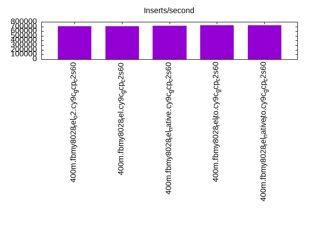
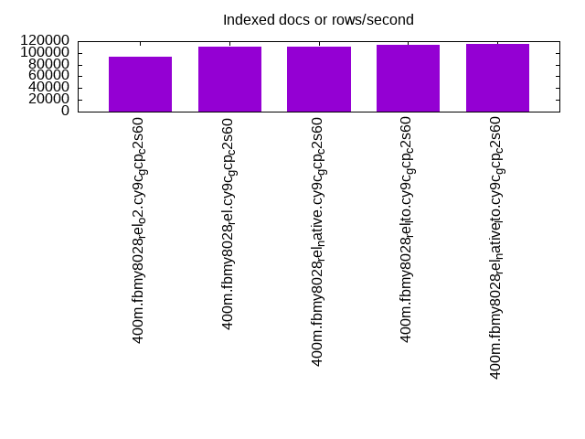
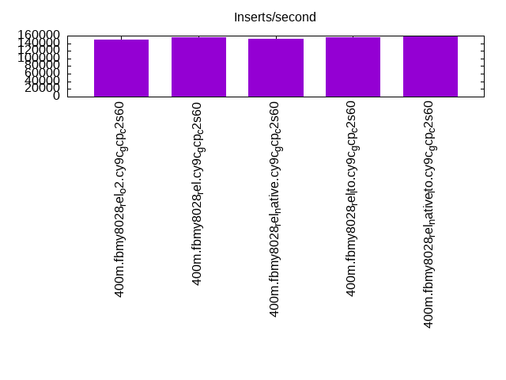
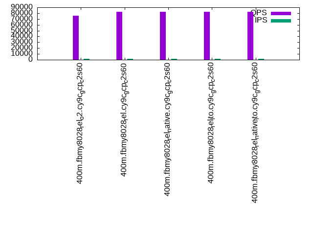
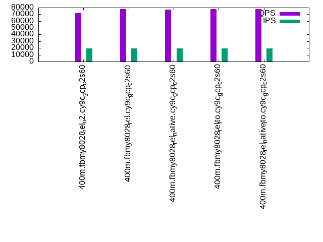

This is a report for the insert benchmark with 400M docs and 20 client(s). It is generated by scripts (bash, awk, sed) and Tufte might not be impressed. An overview of the insert benchmark is here and a short update is here. Below, by DBMS, I mean DBMS+version.config. An example is my8020.c10b40 where my means MySQL, 8020 is version 8.0.20 and c10b40 is the name for the configuration file.
The test server is c2-standard-60 from GCP with 30 cores, hyperthreading disabled, 240G RAM and 3T of NVMe storage. The benchmark was run with 20 clients and there were 1 or 2 connections per client (1 for queries, 1 for inserts). The benchmark loads 400M rows without secondary indexes, creates secondary indexes, loads another 400M rows then does 3 read+write tests for 1800 seconds each that do queries as fast as possible with 100, 500 and then 1000 writes/second/client concurrent with the queries. All clients shared one table. The database is cached by the storage engine and the only IO is for writes. Clients and the DBMS share one server. The per-database configs are in the per-database subdirectories here.
The tested DBMS are:
The numbers are inserts/s for l.i0 and l.i1, indexed docs (or rows) /s for l.x and queries/s for q*.2. The values are the average rate over the entire test for inserts (IPS) and queries (QPS). The range of values for IPS and QPS is split into 3 parts: bottom 25%, middle 50%, top 25%. Values in the bottom 25% have a red background, values in the top 25% have a green background and values in the middle have no color. A gray background is used for values that can be ignored because the DBMS did not sustain the target insert rate. Red backgrounds are not used when the minimum value is within 80% of the max value.
| dbms | l.i0 | l.x | l.i1 | q100.1 | q500.1 | q1000.1 |
|---|---|---|---|---|---|---|
| 400m.fbmy8028_rel_o2.cy9c_gcp_c2s60 | 702988 | 93876 | 150263 | 75507 | 73978 | 71777 |
| 400m.fbmy8028_rel.cy9c_gcp_c2s60 | 710480 | 110923 | 155400 | 82791 | 80602 | 77390 |
| 400m.fbmy8028_rel_native.cy9c_gcp_c2s60 | 713012 | 111232 | 151400 | 82781 | 79972 | 77290 |
| 400m.fbmy8028_rel_lto.cy9c_gcp_c2s60 | 727273 | 113826 | 155159 | 82496 | 80900 | 77982 |
| 400m.fbmy8028_rel_native_lto.cy9c_gcp_c2s60 | 731261 | 115236 | 159744 | 82689 | 80367 | 77959 |
This table has relative throughput, throughput for the DBMS relative to the DBMS in the first line, using the absolute throughput from the previous table.
| dbms | l.i0 | l.x | l.i1 | q100.1 | q500.1 | q1000.1 |
|---|---|---|---|---|---|---|
| 400m.fbmy8028_rel_o2.cy9c_gcp_c2s60 | 1.00 | 1.00 | 1.00 | 1.00 | 1.00 | 1.00 |
| 400m.fbmy8028_rel.cy9c_gcp_c2s60 | 1.01 | 1.18 | 1.03 | 1.10 | 1.09 | 1.08 |
| 400m.fbmy8028_rel_native.cy9c_gcp_c2s60 | 1.01 | 1.18 | 1.01 | 1.10 | 1.08 | 1.08 |
| 400m.fbmy8028_rel_lto.cy9c_gcp_c2s60 | 1.03 | 1.21 | 1.03 | 1.09 | 1.09 | 1.09 |
| 400m.fbmy8028_rel_native_lto.cy9c_gcp_c2s60 | 1.04 | 1.23 | 1.06 | 1.10 | 1.09 | 1.09 |
This lists the average rate of inserts/s for the tests that do inserts concurrent with queries. For such tests the query rate is listed in the table above. The read+write tests are setup so that the insert rate should match the target rate every second. Cells that are not at least 95% of the target have a red background to indicate a failure to satisfy the target.
| dbms | q100.1 | q500.1 | q1000.1 |
|---|---|---|---|
| fbmy8028_rel_o2.cy9c_gcp_c2s60 | 1976 | 9885 | 19769 |
| fbmy8028_rel.cy9c_gcp_c2s60 | 1976 | 9885 | 19769 |
| fbmy8028_rel_native.cy9c_gcp_c2s60 | 1976 | 9885 | 19769 |
| fbmy8028_rel_lto.cy9c_gcp_c2s60 | 1976 | 9885 | 19769 |
| fbmy8028_rel_native_lto.cy9c_gcp_c2s60 | 1977 | 9885 | 19769 |
| target | 2000 | 10000 | 20000 |
l.i0: load without secondary indexes. Graphs for performance per 1-second interval are here.
Average throughput:
Insert response time histogram: each cell has the percentage of responses that take <= the time in the header and max is the max response time in seconds. For the max column values in the top 25% of the range have a red background and in the bottom 25% of the range have a green background. The red background is not used when the min value is within 80% of the max value.
| dbms | 256us | 1ms | 4ms | 16ms | 64ms | 256ms | 1s | 4s | 16s | gt | max |
|---|---|---|---|---|---|---|---|---|---|---|---|
| fbmy8028_rel_o2.cy9c_gcp_c2s60 | 0.340 | 98.528 | 1.089 | 0.008 | 0.036 | 0.250 | |||||
| fbmy8028_rel.cy9c_gcp_c2s60 | 0.345 | 98.638 | 0.974 | 0.006 | 0.036 | 0.253 | |||||
| fbmy8028_rel_native.cy9c_gcp_c2s60 | 0.454 | 98.551 | 0.954 | 0.005 | 0.036 | 0.244 | |||||
| fbmy8028_rel_lto.cy9c_gcp_c2s60 | 0.688 | 98.511 | 0.760 | 0.005 | 0.036 | 0.250 | |||||
| fbmy8028_rel_native_lto.cy9c_gcp_c2s60 | 0.525 | 98.682 | 0.751 | 0.007 | 0.036 | 0.239 |
Performance metrics for the DBMS listed above. Some are normalized by throughput, others are not. Legend for results is here.
ips qps rps rmbps wps wmbps rpq rkbpq wpi wkbpi csps cpups cspq cpupq dbgb1 dbgb2 rss maxop p50 p99 tag 702988 0 0 0.0 442.4 102.1 0.000 0.000 0.001 0.149 129259 44.8 0.184 19 12.6 13.1 1.7 0.250 36959 28669 400m.fbmy8028_rel_o2.cy9c_gcp_c2s60 710480 0 0 0.0 442.1 102.2 0.000 0.000 0.001 0.147 130945 44.6 0.184 19 12.5 13.0 1.7 0.253 37077 28769 400m.fbmy8028_rel.cy9c_gcp_c2s60 713012 0 0 0.0 442.8 104.2 0.000 0.000 0.001 0.150 131557 43.9 0.185 18 12.6 13.1 1.7 0.244 37359 28868 400m.fbmy8028_rel_native.cy9c_gcp_c2s60 727273 0 0 0.0 451.2 105.1 0.000 0.000 0.001 0.148 134990 43.9 0.186 18 12.6 13.1 1.7 0.250 38058 29268 400m.fbmy8028_rel_lto.cy9c_gcp_c2s60 731261 0 0 0.0 455.8 106.5 0.000 0.000 0.001 0.149 134628 44.8 0.184 18 12.5 13.0 1.7 0.239 38173 29467 400m.fbmy8028_rel_native_lto.cy9c_gcp_c2s60
l.x: create secondary indexes.
Average throughput:
Performance metrics for the DBMS listed above. Some are normalized by throughput, others are not. Legend for results is here.
ips qps rps rmbps wps wmbps rpq rkbpq wpi wkbpi csps cpups cspq cpupq dbgb1 dbgb2 rss maxop p50 p99 tag 93876 0 0 0.0 33.3 11.1 0.000 0.000 0.000 0.121 669 2.9 0.007 9 25.3 25.8 26.3 0.002 NA NA 400m.fbmy8028_rel_o2.cy9c_gcp_c2s60 110923 0 0 0.0 39.6 13.3 0.000 0.000 0.000 0.123 723 2.9 0.007 8 25.3 25.9 26.0 0.002 NA NA 400m.fbmy8028_rel.cy9c_gcp_c2s60 111232 0 0 0.0 40.0 13.5 0.000 0.000 0.000 0.125 729 2.9 0.007 8 25.3 25.8 26.2 0.002 NA NA 400m.fbmy8028_rel_native.cy9c_gcp_c2s60 113826 0 0 0.0 40.5 13.8 0.000 0.000 0.000 0.124 730 2.9 0.006 8 25.3 25.8 26.3 0.002 NA NA 400m.fbmy8028_rel_lto.cy9c_gcp_c2s60 115236 0 0 0.0 40.9 14.0 0.000 0.000 0.000 0.124 754 2.9 0.007 8 25.3 25.8 26.0 0.002 NA NA 400m.fbmy8028_rel_native_lto.cy9c_gcp_c2s60
l.i1: continue load after secondary indexes created. Graphs for performance per 1-second interval are here.
Average throughput:
Insert response time histogram: each cell has the percentage of responses that take <= the time in the header and max is the max response time in seconds. For the max column values in the top 25% of the range have a red background and in the bottom 25% of the range have a green background. The red background is not used when the min value is within 80% of the max value.
| dbms | 256us | 1ms | 4ms | 16ms | 64ms | 256ms | 1s | 4s | 16s | gt | max |
|---|---|---|---|---|---|---|---|---|---|---|---|
| fbmy8028_rel_o2.cy9c_gcp_c2s60 | 0.067 | 3.468 | 96.412 | 0.041 | 0.011 | 0.001 | 0.301 | ||||
| fbmy8028_rel.cy9c_gcp_c2s60 | 0.041 | 4.128 | 95.775 | 0.044 | 0.010 | 0.002 | 0.429 | ||||
| fbmy8028_rel_native.cy9c_gcp_c2s60 | 0.044 | 3.564 | 96.334 | 0.048 | 0.010 | 0.001 | 0.307 | ||||
| fbmy8028_rel_lto.cy9c_gcp_c2s60 | 0.048 | 4.340 | 95.556 | 0.041 | 0.014 | 0.001 | 0.292 | ||||
| fbmy8028_rel_native_lto.cy9c_gcp_c2s60 | 0.040 | 5.057 | 94.846 | 0.039 | 0.017 | 0.001 | 0.467 |
Performance metrics for the DBMS listed above. Some are normalized by throughput, others are not. Legend for results is here.
ips qps rps rmbps wps wmbps rpq rkbpq wpi wkbpi csps cpups cspq cpupq dbgb1 dbgb2 rss maxop p50 p99 tag 150263 0 11 2.4 480.4 115.9 0.000 0.016 0.003 0.790 151277 32.8 1.007 65 53.5 54.7 41.1 0.301 7542 6093 400m.fbmy8028_rel_o2.cy9c_gcp_c2s60 155400 0 12 2.4 489.5 118.0 0.000 0.016 0.003 0.777 153808 33.6 0.990 65 54.8 56.0 40.3 0.429 7742 6343 400m.fbmy8028_rel.cy9c_gcp_c2s60 151400 0 11 2.4 475.7 113.8 0.000 0.016 0.003 0.770 154807 33.4 1.022 66 54.7 55.9 40.6 0.307 7592 6196 400m.fbmy8028_rel_native.cy9c_gcp_c2s60 155159 0 11 2.5 488.4 118.8 0.000 0.016 0.003 0.784 153977 32.8 0.992 63 54.9 56.2 40.9 0.292 7744 6243 400m.fbmy8028_rel_lto.cy9c_gcp_c2s60 159744 0 12 2.5 502.3 122.6 0.000 0.016 0.003 0.786 159975 33.8 1.001 63 54.2 55.4 40.7 0.467 7991 6493 400m.fbmy8028_rel_native_lto.cy9c_gcp_c2s60
q100.1: range queries with 100 insert/s per client. Graphs for performance per 1-second interval are here.
Average throughput:
Query response time histogram: each cell has the percentage of responses that take <= the time in the header and max is the max response time in seconds. For max values in the top 25% of the range have a red background and in the bottom 25% of the range have a green background. The red background is not used when the min value is within 80% of the max value.
| dbms | 256us | 1ms | 4ms | 16ms | 64ms | 256ms | 1s | 4s | 16s | gt | max |
|---|---|---|---|---|---|---|---|---|---|---|---|
| fbmy8028_rel_o2.cy9c_gcp_c2s60 | 62.370 | 37.625 | 0.005 | nonzero | nonzero | 0.032 | |||||
| fbmy8028_rel.cy9c_gcp_c2s60 | 81.371 | 18.626 | 0.003 | nonzero | nonzero | 0.017 | |||||
| fbmy8028_rel_native.cy9c_gcp_c2s60 | 81.652 | 18.345 | 0.003 | nonzero | nonzero | 0.024 | |||||
| fbmy8028_rel_lto.cy9c_gcp_c2s60 | 80.994 | 19.003 | 0.003 | nonzero | nonzero | 0.016 | |||||
| fbmy8028_rel_native_lto.cy9c_gcp_c2s60 | 81.163 | 18.834 | 0.003 | nonzero | nonzero | 0.030 |
Insert response time histogram: each cell has the percentage of responses that take <= the time in the header and max is the max response time in seconds. For max values in the top 25% of the range have a red background and in the bottom 25% of the range have a green background. The red background is not used when the min value is within 80% of the max value.
| dbms | 256us | 1ms | 4ms | 16ms | 64ms | 256ms | 1s | 4s | 16s | gt | max |
|---|---|---|---|---|---|---|---|---|---|---|---|
| fbmy8028_rel_o2.cy9c_gcp_c2s60 | 0.001 | 94.219 | 5.779 | 0.015 | |||||||
| fbmy8028_rel.cy9c_gcp_c2s60 | 0.001 | 98.831 | 1.168 | 0.013 | |||||||
| fbmy8028_rel_native.cy9c_gcp_c2s60 | 0.001 | 97.644 | 2.354 | 0.013 | |||||||
| fbmy8028_rel_lto.cy9c_gcp_c2s60 | 0.011 | 96.164 | 3.825 | 0.015 | |||||||
| fbmy8028_rel_native_lto.cy9c_gcp_c2s60 | 0.006 | 99.318 | 0.676 | 0.015 |
Performance metrics for the DBMS listed above. Some are normalized by throughput, others are not. Legend for results is here.
ips qps rps rmbps wps wmbps rpq rkbpq wpi wkbpi csps cpups cspq cpupq dbgb1 dbgb2 rss maxop p50 p99 tag 1976 75507 0 0.0 20.4 3.3 0.000 0.000 0.010 1.724 301802 66.1 3.997 263 52.4 54.1 48.5 0.032 3804 3404 400m.fbmy8028_rel_o2.cy9c_gcp_c2s60 1976 82791 0 0.0 19.7 3.3 0.000 0.000 0.010 1.718 331923 65.8 4.009 238 52.4 54.0 47.1 0.017 4141 3852 400m.fbmy8028_rel.cy9c_gcp_c2s60 1976 82781 0 0.0 21.0 3.4 0.000 0.000 0.011 1.779 329770 65.9 3.984 239 52.4 54.0 48.1 0.024 4203 3852 400m.fbmy8028_rel_native.cy9c_gcp_c2s60 1976 82496 0 0.0 20.1 3.4 0.000 0.000 0.010 1.753 332143 65.8 4.026 239 52.4 54.0 48.1 0.016 4171 3740 400m.fbmy8028_rel_lto.cy9c_gcp_c2s60 1977 82689 0 0.0 18.7 2.9 0.000 0.000 0.009 1.520 328376 65.8 3.971 239 52.4 54.0 48.0 0.030 4140 3740 400m.fbmy8028_rel_native_lto.cy9c_gcp_c2s60
q500.1: range queries with 500 insert/s per client. Graphs for performance per 1-second interval are here.
Average throughput:
Query response time histogram: each cell has the percentage of responses that take <= the time in the header and max is the max response time in seconds. For max values in the top 25% of the range have a red background and in the bottom 25% of the range have a green background. The red background is not used when the min value is within 80% of the max value.
| dbms | 256us | 1ms | 4ms | 16ms | 64ms | 256ms | 1s | 4s | 16s | gt | max |
|---|---|---|---|---|---|---|---|---|---|---|---|
| fbmy8028_rel_o2.cy9c_gcp_c2s60 | 56.670 | 43.299 | 0.029 | 0.001 | 0.001 | 0.030 | |||||
| fbmy8028_rel.cy9c_gcp_c2s60 | 75.660 | 24.315 | 0.024 | 0.001 | nonzero | 0.028 | |||||
| fbmy8028_rel_native.cy9c_gcp_c2s60 | 74.188 | 25.786 | 0.024 | 0.001 | nonzero | 0.030 | |||||
| fbmy8028_rel_lto.cy9c_gcp_c2s60 | 76.130 | 23.845 | 0.023 | 0.001 | 0.001 | 0.027 | |||||
| fbmy8028_rel_native_lto.cy9c_gcp_c2s60 | 74.921 | 25.054 | 0.023 | 0.001 | nonzero | 0.036 |
Insert response time histogram: each cell has the percentage of responses that take <= the time in the header and max is the max response time in seconds. For max values in the top 25% of the range have a red background and in the bottom 25% of the range have a green background. The red background is not used when the min value is within 80% of the max value.
| dbms | 256us | 1ms | 4ms | 16ms | 64ms | 256ms | 1s | 4s | 16s | gt | max |
|---|---|---|---|---|---|---|---|---|---|---|---|
| fbmy8028_rel_o2.cy9c_gcp_c2s60 | 16.273 | 83.315 | 0.413 | 0.036 | |||||||
| fbmy8028_rel.cy9c_gcp_c2s60 | 15.631 | 83.992 | 0.378 | 0.030 | |||||||
| fbmy8028_rel_native.cy9c_gcp_c2s60 | 16.284 | 83.311 | 0.405 | 0.036 | |||||||
| fbmy8028_rel_lto.cy9c_gcp_c2s60 | 17.822 | 81.854 | 0.324 | 0.025 | |||||||
| fbmy8028_rel_native_lto.cy9c_gcp_c2s60 | 0.001 | 16.924 | 82.713 | 0.363 | 0.051 |
Performance metrics for the DBMS listed above. Some are normalized by throughput, others are not. Legend for results is here.
ips qps rps rmbps wps wmbps rpq rkbpq wpi wkbpi csps cpups cspq cpupq dbgb1 dbgb2 rss maxop p50 p99 tag 9885 73978 0 0.0 44.1 9.6 0.000 0.000 0.004 0.992 292704 67.3 3.957 273 53.5 55.5 60.0 0.030 3726 3389 400m.fbmy8028_rel_o2.cy9c_gcp_c2s60 9885 80602 0 0.0 42.3 10.3 0.000 0.000 0.004 1.067 320898 67.1 3.981 250 53.7 55.7 58.8 0.028 4060 3694 400m.fbmy8028_rel.cy9c_gcp_c2s60 9885 79972 0 0.0 42.4 10.3 0.000 0.000 0.004 1.070 319308 67.1 3.993 252 53.6 55.5 59.3 0.030 4043 3676 400m.fbmy8028_rel_native.cy9c_gcp_c2s60 9885 80900 0 0.0 43.0 10.1 0.000 0.000 0.004 1.042 320964 67.1 3.967 249 53.5 55.5 59.3 0.027 4075 3692 400m.fbmy8028_rel_lto.cy9c_gcp_c2s60 9885 80367 0 0.0 45.2 10.4 0.000 0.000 0.005 1.079 316969 67.1 3.944 250 53.7 55.6 60.5 0.036 4076 3660 400m.fbmy8028_rel_native_lto.cy9c_gcp_c2s60
q1000.1: range queries with 1000 insert/s per client. Graphs for performance per 1-second interval are here.
Average throughput:
Query response time histogram: each cell has the percentage of responses that take <= the time in the header and max is the max response time in seconds. For max values in the top 25% of the range have a red background and in the bottom 25% of the range have a green background. The red background is not used when the min value is within 80% of the max value.
| dbms | 256us | 1ms | 4ms | 16ms | 64ms | 256ms | 1s | 4s | 16s | gt | max |
|---|---|---|---|---|---|---|---|---|---|---|---|
| fbmy8028_rel_o2.cy9c_gcp_c2s60 | 47.939 | 52.011 | 0.048 | 0.001 | nonzero | 0.031 | |||||
| fbmy8028_rel.cy9c_gcp_c2s60 | 65.224 | 34.735 | 0.039 | 0.001 | nonzero | 0.036 | |||||
| fbmy8028_rel_native.cy9c_gcp_c2s60 | 64.711 | 35.248 | 0.040 | 0.001 | nonzero | 0.031 | |||||
| fbmy8028_rel_lto.cy9c_gcp_c2s60 | 67.048 | 32.913 | 0.038 | 0.001 | nonzero | 0.025 | |||||
| fbmy8028_rel_native_lto.cy9c_gcp_c2s60 | 66.815 | 33.146 | 0.038 | 0.001 | nonzero | 0.024 |
Insert response time histogram: each cell has the percentage of responses that take <= the time in the header and max is the max response time in seconds. For max values in the top 25% of the range have a red background and in the bottom 25% of the range have a green background. The red background is not used when the min value is within 80% of the max value.
| dbms | 256us | 1ms | 4ms | 16ms | 64ms | 256ms | 1s | 4s | 16s | gt | max |
|---|---|---|---|---|---|---|---|---|---|---|---|
| fbmy8028_rel_o2.cy9c_gcp_c2s60 | 24.761 | 74.751 | 0.487 | 0.042 | |||||||
| fbmy8028_rel.cy9c_gcp_c2s60 | 0.001 | 26.538 | 72.973 | 0.488 | 0.036 | ||||||
| fbmy8028_rel_native.cy9c_gcp_c2s60 | nonzero | 24.080 | 75.405 | 0.515 | 0.039 | ||||||
| fbmy8028_rel_lto.cy9c_gcp_c2s60 | 0.003 | 26.307 | 73.272 | 0.418 | 0.033 | ||||||
| fbmy8028_rel_native_lto.cy9c_gcp_c2s60 | 0.002 | 25.507 | 74.093 | 0.398 | 0.053 |
Performance metrics for the DBMS listed above. Some are normalized by throughput, others are not. Legend for results is here.
ips qps rps rmbps wps wmbps rpq rkbpq wpi wkbpi csps cpups cspq cpupq dbgb1 dbgb2 rss maxop p50 p99 tag 19769 71777 0 0.0 76.7 23.5 0.000 0.000 0.004 1.216 280888 69.1 3.913 289 56.0 56.5 82.0 0.031 3660 3342 400m.fbmy8028_rel_o2.cy9c_gcp_c2s60 19769 77390 0 0.0 77.8 24.0 0.000 0.000 0.004 1.246 305893 68.9 3.953 267 55.9 56.5 81.5 0.036 3917 3612 400m.fbmy8028_rel.cy9c_gcp_c2s60 19769 77290 0 0.0 80.1 23.4 0.000 0.000 0.004 1.210 305978 69.1 3.959 268 56.3 56.8 82.1 0.031 3935 3612 400m.fbmy8028_rel_native.cy9c_gcp_c2s60 19769 77982 0 0.0 76.7 23.2 0.000 0.000 0.004 1.202 308235 68.8 3.953 265 56.0 56.5 81.2 0.025 3996 3644 400m.fbmy8028_rel_lto.cy9c_gcp_c2s60 19769 77959 0 0.0 78.1 23.9 0.000 0.000 0.004 1.237 306153 68.8 3.927 265 55.9 56.4 82.8 0.024 3932 3596 400m.fbmy8028_rel_native_lto.cy9c_gcp_c2s60
l.i0: load without secondary indexes
Performance metrics for all DBMS, not just the ones listed above. Some are normalized by throughput, others are not. Legend for results is here.
ips qps rps rmbps wps wmbps rpq rkbpq wpi wkbpi csps cpups cspq cpupq dbgb1 dbgb2 rss maxop p50 p99 tag 702988 0 0 0.0 442.4 102.1 0.000 0.000 0.001 0.149 129259 44.8 0.184 19 12.6 13.1 1.7 0.250 36959 28669 400m.fbmy8028_rel_o2.cy9c_gcp_c2s60 710480 0 0 0.0 442.1 102.2 0.000 0.000 0.001 0.147 130945 44.6 0.184 19 12.5 13.0 1.7 0.253 37077 28769 400m.fbmy8028_rel.cy9c_gcp_c2s60 713012 0 0 0.0 442.8 104.2 0.000 0.000 0.001 0.150 131557 43.9 0.185 18 12.6 13.1 1.7 0.244 37359 28868 400m.fbmy8028_rel_native.cy9c_gcp_c2s60 727273 0 0 0.0 451.2 105.1 0.000 0.000 0.001 0.148 134990 43.9 0.186 18 12.6 13.1 1.7 0.250 38058 29268 400m.fbmy8028_rel_lto.cy9c_gcp_c2s60 731261 0 0 0.0 455.8 106.5 0.000 0.000 0.001 0.149 134628 44.8 0.184 18 12.5 13.0 1.7 0.239 38173 29467 400m.fbmy8028_rel_native_lto.cy9c_gcp_c2s60
l.x: create secondary indexes
Performance metrics for all DBMS, not just the ones listed above. Some are normalized by throughput, others are not. Legend for results is here.
ips qps rps rmbps wps wmbps rpq rkbpq wpi wkbpi csps cpups cspq cpupq dbgb1 dbgb2 rss maxop p50 p99 tag 93876 0 0 0.0 33.3 11.1 0.000 0.000 0.000 0.121 669 2.9 0.007 9 25.3 25.8 26.3 0.002 NA NA 400m.fbmy8028_rel_o2.cy9c_gcp_c2s60 110923 0 0 0.0 39.6 13.3 0.000 0.000 0.000 0.123 723 2.9 0.007 8 25.3 25.9 26.0 0.002 NA NA 400m.fbmy8028_rel.cy9c_gcp_c2s60 111232 0 0 0.0 40.0 13.5 0.000 0.000 0.000 0.125 729 2.9 0.007 8 25.3 25.8 26.2 0.002 NA NA 400m.fbmy8028_rel_native.cy9c_gcp_c2s60 113826 0 0 0.0 40.5 13.8 0.000 0.000 0.000 0.124 730 2.9 0.006 8 25.3 25.8 26.3 0.002 NA NA 400m.fbmy8028_rel_lto.cy9c_gcp_c2s60 115236 0 0 0.0 40.9 14.0 0.000 0.000 0.000 0.124 754 2.9 0.007 8 25.3 25.8 26.0 0.002 NA NA 400m.fbmy8028_rel_native_lto.cy9c_gcp_c2s60
l.i1: continue load after secondary indexes created
Performance metrics for all DBMS, not just the ones listed above. Some are normalized by throughput, others are not. Legend for results is here.
ips qps rps rmbps wps wmbps rpq rkbpq wpi wkbpi csps cpups cspq cpupq dbgb1 dbgb2 rss maxop p50 p99 tag 150263 0 11 2.4 480.4 115.9 0.000 0.016 0.003 0.790 151277 32.8 1.007 65 53.5 54.7 41.1 0.301 7542 6093 400m.fbmy8028_rel_o2.cy9c_gcp_c2s60 155400 0 12 2.4 489.5 118.0 0.000 0.016 0.003 0.777 153808 33.6 0.990 65 54.8 56.0 40.3 0.429 7742 6343 400m.fbmy8028_rel.cy9c_gcp_c2s60 151400 0 11 2.4 475.7 113.8 0.000 0.016 0.003 0.770 154807 33.4 1.022 66 54.7 55.9 40.6 0.307 7592 6196 400m.fbmy8028_rel_native.cy9c_gcp_c2s60 155159 0 11 2.5 488.4 118.8 0.000 0.016 0.003 0.784 153977 32.8 0.992 63 54.9 56.2 40.9 0.292 7744 6243 400m.fbmy8028_rel_lto.cy9c_gcp_c2s60 159744 0 12 2.5 502.3 122.6 0.000 0.016 0.003 0.786 159975 33.8 1.001 63 54.2 55.4 40.7 0.467 7991 6493 400m.fbmy8028_rel_native_lto.cy9c_gcp_c2s60
q100.1: range queries with 100 insert/s per client
Performance metrics for all DBMS, not just the ones listed above. Some are normalized by throughput, others are not. Legend for results is here.
ips qps rps rmbps wps wmbps rpq rkbpq wpi wkbpi csps cpups cspq cpupq dbgb1 dbgb2 rss maxop p50 p99 tag 1976 75507 0 0.0 20.4 3.3 0.000 0.000 0.010 1.724 301802 66.1 3.997 263 52.4 54.1 48.5 0.032 3804 3404 400m.fbmy8028_rel_o2.cy9c_gcp_c2s60 1976 82791 0 0.0 19.7 3.3 0.000 0.000 0.010 1.718 331923 65.8 4.009 238 52.4 54.0 47.1 0.017 4141 3852 400m.fbmy8028_rel.cy9c_gcp_c2s60 1976 82781 0 0.0 21.0 3.4 0.000 0.000 0.011 1.779 329770 65.9 3.984 239 52.4 54.0 48.1 0.024 4203 3852 400m.fbmy8028_rel_native.cy9c_gcp_c2s60 1976 82496 0 0.0 20.1 3.4 0.000 0.000 0.010 1.753 332143 65.8 4.026 239 52.4 54.0 48.1 0.016 4171 3740 400m.fbmy8028_rel_lto.cy9c_gcp_c2s60 1977 82689 0 0.0 18.7 2.9 0.000 0.000 0.009 1.520 328376 65.8 3.971 239 52.4 54.0 48.0 0.030 4140 3740 400m.fbmy8028_rel_native_lto.cy9c_gcp_c2s60
q500.1: range queries with 500 insert/s per client
Performance metrics for all DBMS, not just the ones listed above. Some are normalized by throughput, others are not. Legend for results is here.
ips qps rps rmbps wps wmbps rpq rkbpq wpi wkbpi csps cpups cspq cpupq dbgb1 dbgb2 rss maxop p50 p99 tag 9885 73978 0 0.0 44.1 9.6 0.000 0.000 0.004 0.992 292704 67.3 3.957 273 53.5 55.5 60.0 0.030 3726 3389 400m.fbmy8028_rel_o2.cy9c_gcp_c2s60 9885 80602 0 0.0 42.3 10.3 0.000 0.000 0.004 1.067 320898 67.1 3.981 250 53.7 55.7 58.8 0.028 4060 3694 400m.fbmy8028_rel.cy9c_gcp_c2s60 9885 79972 0 0.0 42.4 10.3 0.000 0.000 0.004 1.070 319308 67.1 3.993 252 53.6 55.5 59.3 0.030 4043 3676 400m.fbmy8028_rel_native.cy9c_gcp_c2s60 9885 80900 0 0.0 43.0 10.1 0.000 0.000 0.004 1.042 320964 67.1 3.967 249 53.5 55.5 59.3 0.027 4075 3692 400m.fbmy8028_rel_lto.cy9c_gcp_c2s60 9885 80367 0 0.0 45.2 10.4 0.000 0.000 0.005 1.079 316969 67.1 3.944 250 53.7 55.6 60.5 0.036 4076 3660 400m.fbmy8028_rel_native_lto.cy9c_gcp_c2s60
q1000.1: range queries with 1000 insert/s per client
Performance metrics for all DBMS, not just the ones listed above. Some are normalized by throughput, others are not. Legend for results is here.
ips qps rps rmbps wps wmbps rpq rkbpq wpi wkbpi csps cpups cspq cpupq dbgb1 dbgb2 rss maxop p50 p99 tag 19769 71777 0 0.0 76.7 23.5 0.000 0.000 0.004 1.216 280888 69.1 3.913 289 56.0 56.5 82.0 0.031 3660 3342 400m.fbmy8028_rel_o2.cy9c_gcp_c2s60 19769 77390 0 0.0 77.8 24.0 0.000 0.000 0.004 1.246 305893 68.9 3.953 267 55.9 56.5 81.5 0.036 3917 3612 400m.fbmy8028_rel.cy9c_gcp_c2s60 19769 77290 0 0.0 80.1 23.4 0.000 0.000 0.004 1.210 305978 69.1 3.959 268 56.3 56.8 82.1 0.031 3935 3612 400m.fbmy8028_rel_native.cy9c_gcp_c2s60 19769 77982 0 0.0 76.7 23.2 0.000 0.000 0.004 1.202 308235 68.8 3.953 265 56.0 56.5 81.2 0.025 3996 3644 400m.fbmy8028_rel_lto.cy9c_gcp_c2s60 19769 77959 0 0.0 78.1 23.9 0.000 0.000 0.004 1.237 306153 68.8 3.927 265 55.9 56.4 82.8 0.024 3932 3596 400m.fbmy8028_rel_native_lto.cy9c_gcp_c2s60
Insert response time histogram
256us 1ms 4ms 16ms 64ms 256ms 1s 4s 16s gt max tag 0.000 0.340 98.528 1.089 0.008 0.036 0.000 0.000 0.000 0.000 0.250 fbmy8028_rel_o2.cy9c_gcp_c2s60 0.000 0.345 98.638 0.974 0.006 0.036 0.000 0.000 0.000 0.000 0.253 fbmy8028_rel.cy9c_gcp_c2s60 0.000 0.454 98.551 0.954 0.005 0.036 0.000 0.000 0.000 0.000 0.244 fbmy8028_rel_native.cy9c_gcp_c2s60 0.000 0.688 98.511 0.760 0.005 0.036 0.000 0.000 0.000 0.000 0.250 fbmy8028_rel_lto.cy9c_gcp_c2s60 0.000 0.525 98.682 0.751 0.007 0.036 0.000 0.000 0.000 0.000 0.239 fbmy8028_rel_native_lto.cy9c_gcp_c2s60
TODO - determine whether there is data for create index response time
Insert response time histogram
256us 1ms 4ms 16ms 64ms 256ms 1s 4s 16s gt max tag 0.000 0.067 3.468 96.412 0.041 0.011 0.001 0.000 0.000 0.000 0.301 fbmy8028_rel_o2.cy9c_gcp_c2s60 0.000 0.041 4.128 95.775 0.044 0.010 0.002 0.000 0.000 0.000 0.429 fbmy8028_rel.cy9c_gcp_c2s60 0.000 0.044 3.564 96.334 0.048 0.010 0.001 0.000 0.000 0.000 0.307 fbmy8028_rel_native.cy9c_gcp_c2s60 0.000 0.048 4.340 95.556 0.041 0.014 0.001 0.000 0.000 0.000 0.292 fbmy8028_rel_lto.cy9c_gcp_c2s60 0.000 0.040 5.057 94.846 0.039 0.017 0.001 0.000 0.000 0.000 0.467 fbmy8028_rel_native_lto.cy9c_gcp_c2s60
Query response time histogram
256us 1ms 4ms 16ms 64ms 256ms 1s 4s 16s gt max tag 62.370 37.625 0.005 nonzero nonzero 0.000 0.000 0.000 0.000 0.000 0.032 fbmy8028_rel_o2.cy9c_gcp_c2s60 81.371 18.626 0.003 nonzero nonzero 0.000 0.000 0.000 0.000 0.000 0.017 fbmy8028_rel.cy9c_gcp_c2s60 81.652 18.345 0.003 nonzero nonzero 0.000 0.000 0.000 0.000 0.000 0.024 fbmy8028_rel_native.cy9c_gcp_c2s60 80.994 19.003 0.003 nonzero nonzero 0.000 0.000 0.000 0.000 0.000 0.016 fbmy8028_rel_lto.cy9c_gcp_c2s60 81.163 18.834 0.003 nonzero nonzero 0.000 0.000 0.000 0.000 0.000 0.030 fbmy8028_rel_native_lto.cy9c_gcp_c2s60
Insert response time histogram
256us 1ms 4ms 16ms 64ms 256ms 1s 4s 16s gt max tag 0.000 0.001 94.219 5.779 0.000 0.000 0.000 0.000 0.000 0.000 0.015 fbmy8028_rel_o2.cy9c_gcp_c2s60 0.000 0.001 98.831 1.168 0.000 0.000 0.000 0.000 0.000 0.000 0.013 fbmy8028_rel.cy9c_gcp_c2s60 0.000 0.001 97.644 2.354 0.000 0.000 0.000 0.000 0.000 0.000 0.013 fbmy8028_rel_native.cy9c_gcp_c2s60 0.000 0.011 96.164 3.825 0.000 0.000 0.000 0.000 0.000 0.000 0.015 fbmy8028_rel_lto.cy9c_gcp_c2s60 0.000 0.006 99.318 0.676 0.000 0.000 0.000 0.000 0.000 0.000 0.015 fbmy8028_rel_native_lto.cy9c_gcp_c2s60
Query response time histogram
256us 1ms 4ms 16ms 64ms 256ms 1s 4s 16s gt max tag 56.670 43.299 0.029 0.001 0.001 0.000 0.000 0.000 0.000 0.000 0.030 fbmy8028_rel_o2.cy9c_gcp_c2s60 75.660 24.315 0.024 0.001 nonzero 0.000 0.000 0.000 0.000 0.000 0.028 fbmy8028_rel.cy9c_gcp_c2s60 74.188 25.786 0.024 0.001 nonzero 0.000 0.000 0.000 0.000 0.000 0.030 fbmy8028_rel_native.cy9c_gcp_c2s60 76.130 23.845 0.023 0.001 0.001 0.000 0.000 0.000 0.000 0.000 0.027 fbmy8028_rel_lto.cy9c_gcp_c2s60 74.921 25.054 0.023 0.001 nonzero 0.000 0.000 0.000 0.000 0.000 0.036 fbmy8028_rel_native_lto.cy9c_gcp_c2s60
Insert response time histogram
256us 1ms 4ms 16ms 64ms 256ms 1s 4s 16s gt max tag 0.000 0.000 16.273 83.315 0.413 0.000 0.000 0.000 0.000 0.000 0.036 fbmy8028_rel_o2.cy9c_gcp_c2s60 0.000 0.000 15.631 83.992 0.378 0.000 0.000 0.000 0.000 0.000 0.030 fbmy8028_rel.cy9c_gcp_c2s60 0.000 0.000 16.284 83.311 0.405 0.000 0.000 0.000 0.000 0.000 0.036 fbmy8028_rel_native.cy9c_gcp_c2s60 0.000 0.000 17.822 81.854 0.324 0.000 0.000 0.000 0.000 0.000 0.025 fbmy8028_rel_lto.cy9c_gcp_c2s60 0.000 0.001 16.924 82.713 0.363 0.000 0.000 0.000 0.000 0.000 0.051 fbmy8028_rel_native_lto.cy9c_gcp_c2s60
Query response time histogram
256us 1ms 4ms 16ms 64ms 256ms 1s 4s 16s gt max tag 47.939 52.011 0.048 0.001 nonzero 0.000 0.000 0.000 0.000 0.000 0.031 fbmy8028_rel_o2.cy9c_gcp_c2s60 65.224 34.735 0.039 0.001 nonzero 0.000 0.000 0.000 0.000 0.000 0.036 fbmy8028_rel.cy9c_gcp_c2s60 64.711 35.248 0.040 0.001 nonzero 0.000 0.000 0.000 0.000 0.000 0.031 fbmy8028_rel_native.cy9c_gcp_c2s60 67.048 32.913 0.038 0.001 nonzero 0.000 0.000 0.000 0.000 0.000 0.025 fbmy8028_rel_lto.cy9c_gcp_c2s60 66.815 33.146 0.038 0.001 nonzero 0.000 0.000 0.000 0.000 0.000 0.024 fbmy8028_rel_native_lto.cy9c_gcp_c2s60
Insert response time histogram
256us 1ms 4ms 16ms 64ms 256ms 1s 4s 16s gt max tag 0.000 0.000 24.761 74.751 0.487 0.000 0.000 0.000 0.000 0.000 0.042 fbmy8028_rel_o2.cy9c_gcp_c2s60 0.000 0.001 26.538 72.973 0.488 0.000 0.000 0.000 0.000 0.000 0.036 fbmy8028_rel.cy9c_gcp_c2s60 0.000 nonzero 24.080 75.405 0.515 0.000 0.000 0.000 0.000 0.000 0.039 fbmy8028_rel_native.cy9c_gcp_c2s60 0.000 0.003 26.307 73.272 0.418 0.000 0.000 0.000 0.000 0.000 0.033 fbmy8028_rel_lto.cy9c_gcp_c2s60 0.000 0.002 25.507 74.093 0.398 0.000 0.000 0.000 0.000 0.000 0.053 fbmy8028_rel_native_lto.cy9c_gcp_c2s60